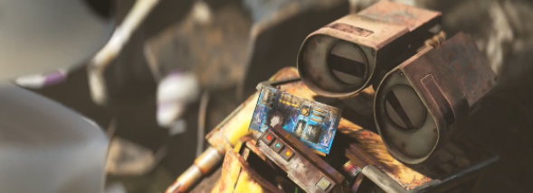
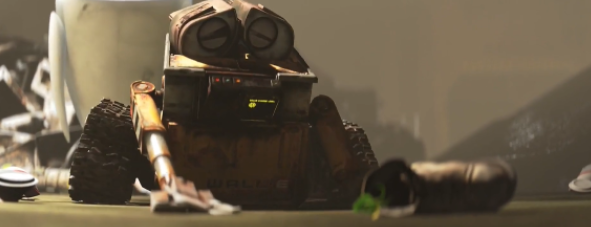
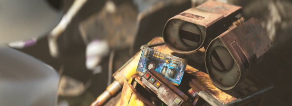
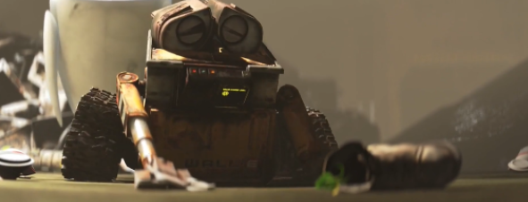

There are lots of trials Wall-E has faced in the movie. Wall-e’s road of trial scenes starts from the escaping from robots. As he was seen as the starter of rebellion amongst broken robots, this was seen as a great threat amongst other robots. Their photos were all around the spaceship in a caution title. Wall-E and Eve must escape from these robots. His task became more compelling than the first one. The second trial was saving himself from the capsule that he locked in. This escaping capsule had a countdown for self-destruction function. By using a fire extinguisher, he saved himself from that capsule.The passed this hard task in this way. The third trial was the most harsh trial that Wall-e had faced. He fought back to the auto about not giving the plant. But unfortunately, he got injured by auto, and this injury was fatal for him. But when he and Eve were sent to dump, he wanted Eve to take the plant to the place where the plant should be.

 



In the movie, the goddess is EVE.The appearance of the goddess is not sudden and does not rely on the Monomyth cycle. Eve does not appear suddenly in the movie but we saw her from the beginning of the movie. Actually she was the reason for Wall-E to attend this adventure. Eve was both mentor and goddess in the movie.
In the movie, there was one character who fit into the father description which was Auto. Auto devoted himself to preventing spaceship from landing on Earth since he was given order that they all must stay in that spaceship forever. Even though there was a captain of the spaceship, he had all the power in the spaceship. While Wall-e and EVE were trying to complete the process of putting the plant, auto fought against them. Auto and captain fought in the pilot house. In that scene, Auto shows us that he has all the power of the spaceship by changing the direction of the rudder and he said “enough” in that scene. Auto pressed the button for closing the place where the plant must be in it. But in the other part, Wall-E resisted him. We saw their fight in that scene. Wall-E beat the Auto and the captain closed the Auto.
Atonement with father and ultimate boon video
The scene of resisting the Auto was ending with completing the plant mission. That was a great success. Wall-e saved everyone from a long-lasting captivity. Everybody was ready to go and start a colonization on the Earth which was the aim of building the spaceship. Wall-e’s success just was not putting plants to the place, he was also completing the major mission. He brought life again to the Earth and saved the people around him. Without his sacrifices this mission would not be completed.